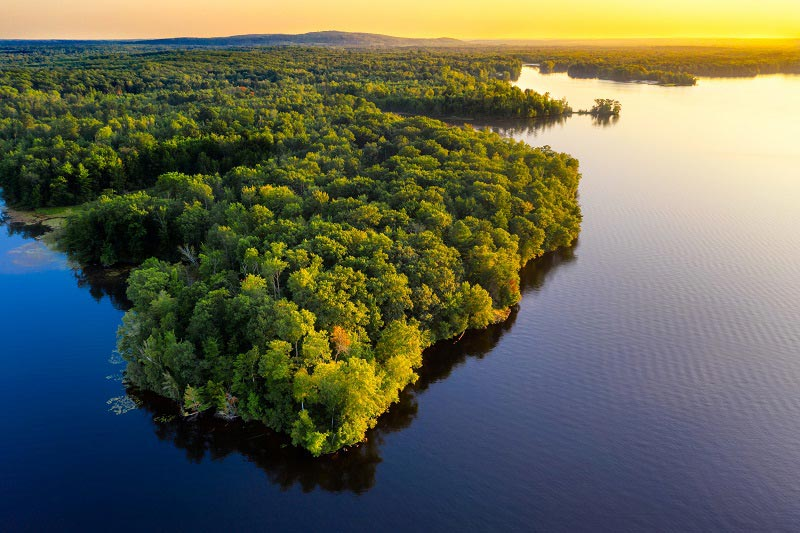

A Amazônia é a maior floresta tropical do mundo e abriga a maior biodiversidade do planeta. Com uma área de aproximadamente 6,7 milhões de km², ela abrange nove países sul-americanos, sendo quase 60% do seu território localizado no Brasil, na área conhecida como Amazônia Legal.
ela tem como principais caracteristicas
Rios Voadores: As árvores amazônicas realizam tanta evapotranspiração que liberam bilhões de litros de água na atmosfera por dia. Esse vapor forma "rios voadores" que viajam pelo ar e determinam o regime de chuvas em grande parte do continente sul-americano.
A Internet da Floresta: As árvores conseguem se comunicar, trocar nutrientes e enviar sinais químicos por meio de uma vasta rede subterrânea de fungos, garantindo a sobrevivência das espécies.
Rio Subterrâneo Hamza: Pesquisadores descobriram um gigantesco rio subterrâneo que corre sob o Rio Amazonas. Ele tem cerca de 6 mil quilômetros de extensão e encontra-se a 4 mil metros de profundidade.
O Maior Rio do Mundo: O Rio Amazonas é o maior rio em volume de água do planeta. Ele descarrega aproximadamente 100 milhões de litros de água doce por segundo no Oceano Atlântico.
Areia do Deserto do Saara: Os ventos atravessam o Oceano Atlântico e trazem toneladas de poeira do deserto do Saara, que ajudam a fertilizar naturalmente o solo amazônico.
